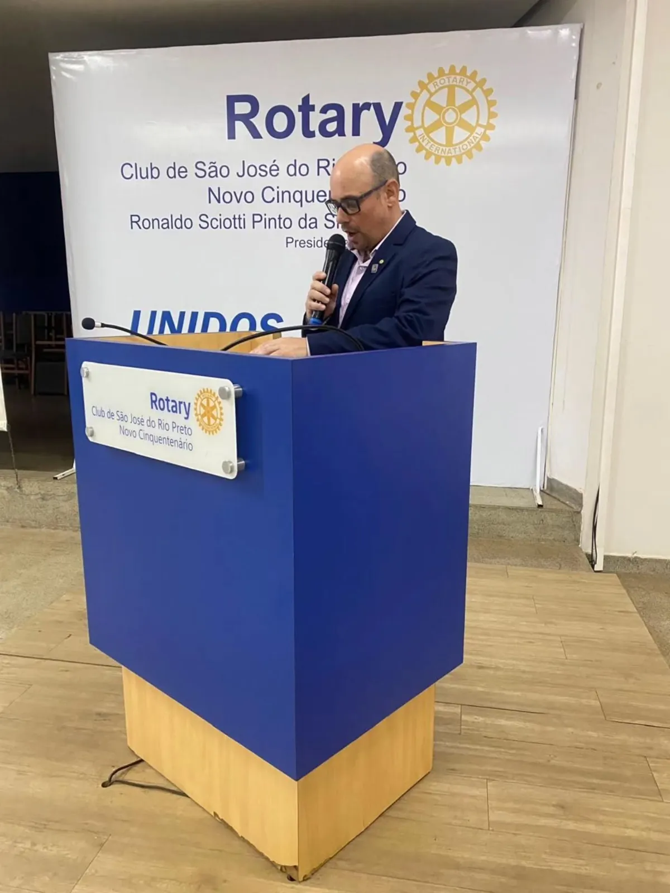
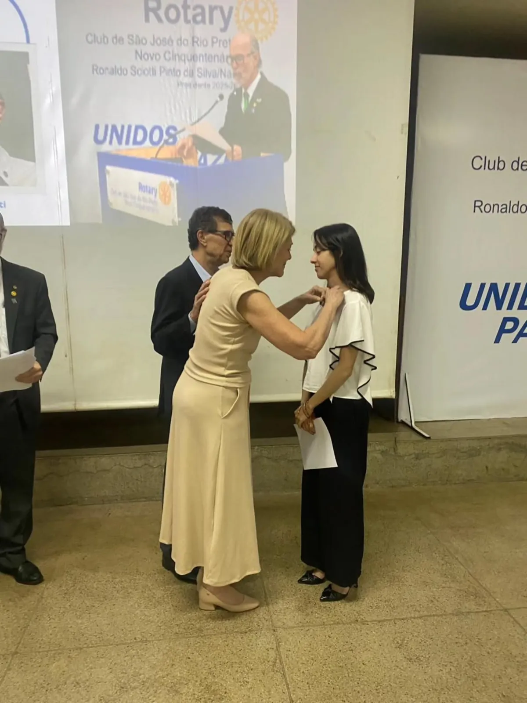
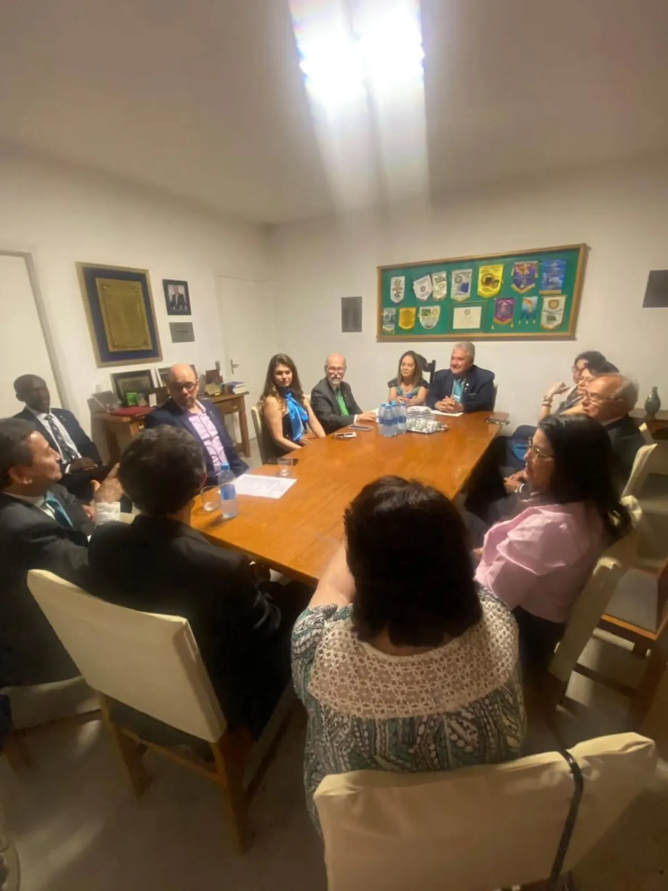

Visita do governador e boas-vindas a uma nova companheira
O governador Lelo Maset fez a visita oficial ao clube, que também deu posse à associada Beatriz Bonfim Cupari.



1 / 4
Associados e convidados reunidos na visita oficial do governador
Em 27 de agosto de 2025, o clube recebeu a visita oficial do governador 2025/26 do Distrito 4480, Lelo Maset, acompanhado da esposa, Cláudia, e da governadora assistente Cristiane Pinheiro.
A noite teve posse: Beatriz Bonfim Cupari, educadora física com atuação em Pilates, entrou para o clube como associada.
Também houve homenagens ao Dia dos Pais e aos aniversariantes de julho e agosto. Uma reunião de família rotária, unida pelo ideal de servir.
Fotos: Rotary Club de São José do Rio Preto – Novo Cinquentenário.
Essa história é de muita gente. Ela aconteceu porque rotarianos, famílias e parceiros decidiram fazer junto. Venha escrever a próxima com a gente.
Com o Instituto Alarme e a AREC, o clube ajuda a preparar a festa e vende os convites. Em 2026, foram mais de 600 convidados, e toda a renda vai para o Alarme.